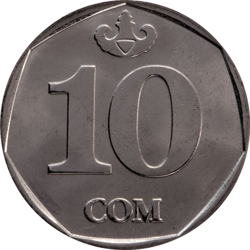
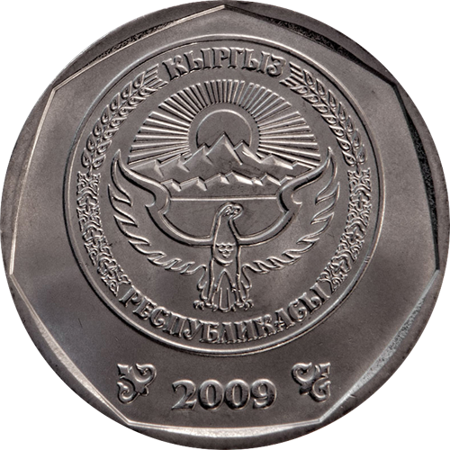
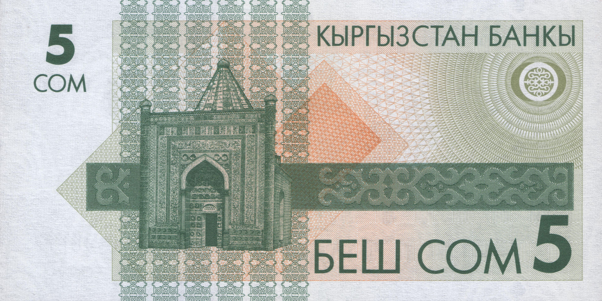
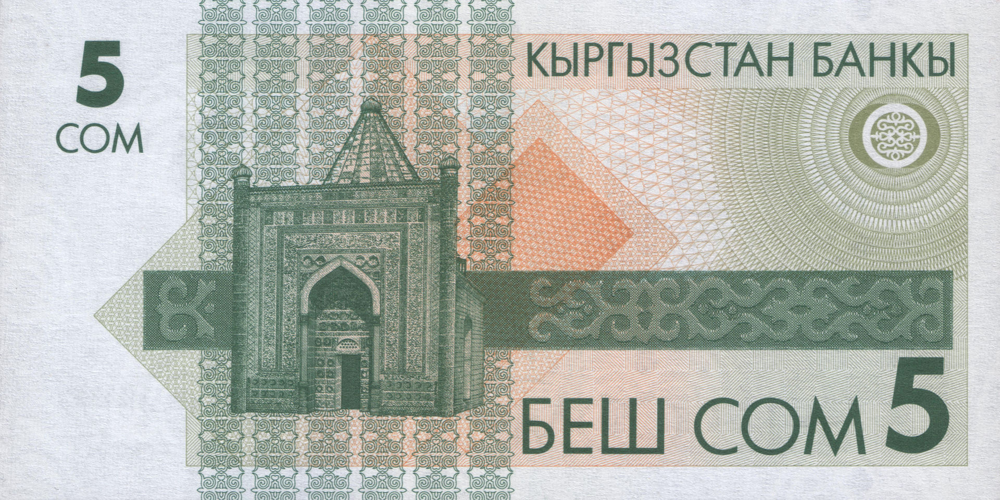
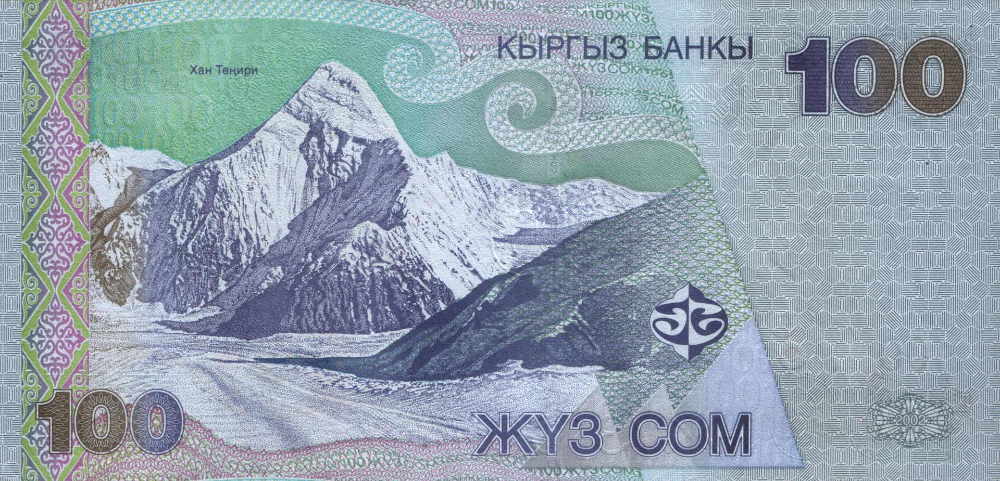
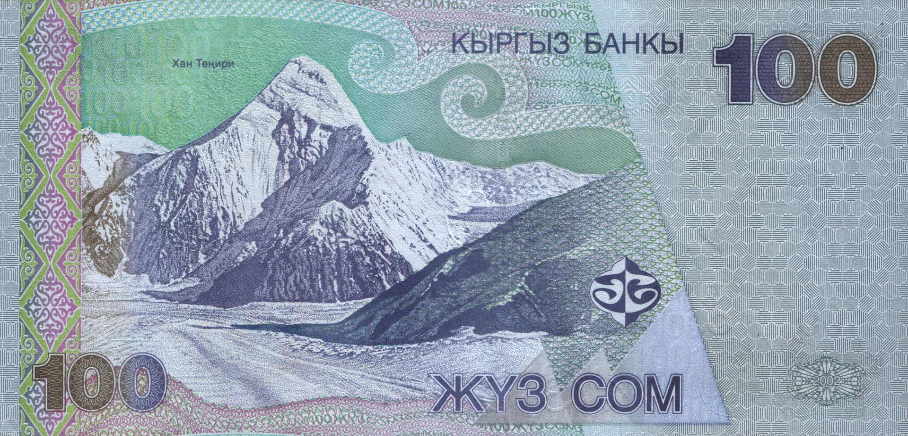
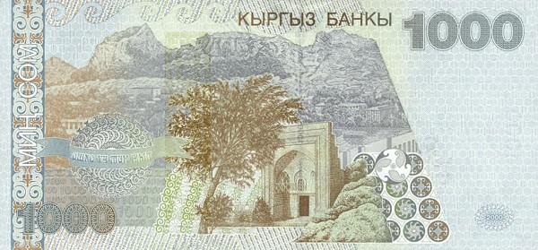
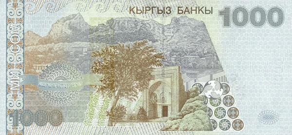
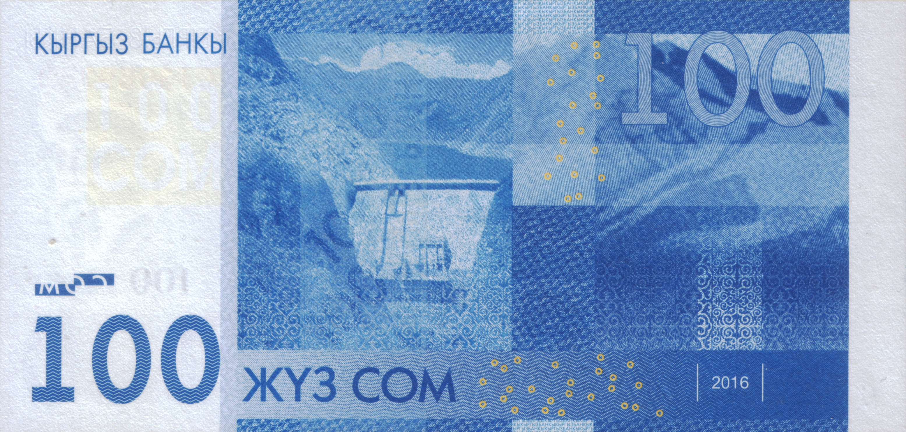
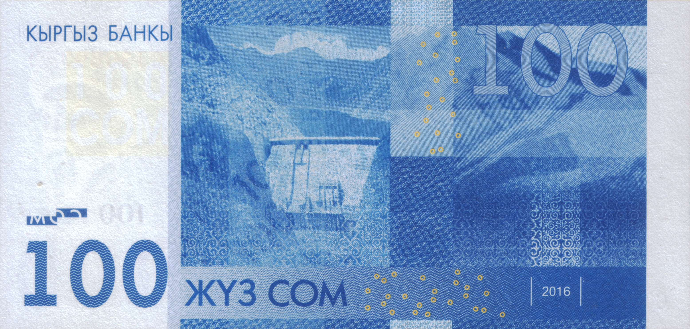

НАЦИОНАЛЬНЫЙ БАНК
КЫРГЫЗСКОЙ РЕСПУБЛИКИ
| Валюта | 08.06.2025 | 09.06.2025 |
|---|---|---|
 USD USD |
87,4500 | 87,4500 |
 EUR EUR |
99,6799 | 99,8285 |
 RUB RUB |
1,1105 | 1,1029 |
 KZT KZT |
0,1708 | 0,1714 |
 CNY CNY |
12,1655 | 12,1777 |
Уровень инфляции в Кыргызстане по месяцам 2025 года:
Январь 2025: 6.7%
Февраль 2025: 7.0%
Март 2025: 6.9%
Апрель 2025: 7.1%
Май 2025: 7.7%
Стандартные монеты Кыргызстан
| Изображение | Номинал | Материал | Диаметр (мм) |
Толщина (мм) |
Масса (г) |
Гурт | Дата | ||
|---|---|---|---|---|---|---|---|---|---|
| Лицевая | Обратная | чеканки | введения | ||||||
| 1 тыйын | латунь | 14 | 0,95 | 1,0 | рубчатый | 2008 | 1 января 2008 | ||
| 10 тыйынов | сталь, плак латунью | 15 | 1,15 | 1,3 | гладкий | ||||
 |
 |
50 тыйынов | 17 | 1,22 | 1,8 | ||||
 |
 |
1 сом | сталь, плак никелем | 19 | 1,36 | 2,5 | рубчатый | ||
 |
 |
3 сома | 21 | 1,4 | 3,2 | ||||
 |
 |
5 сомов | 23 | 1,55 | 4,2 | ||||
|  |  | 10 сомов | 24,5 | 1,65 | 5,4 | прерывисто-рубчатый | 2009 | 1 декабря 2009 | |
| прерывисто-рубчатый с надписью «ОН СОМ — 10 СОМ» |
2009 (2014) | 1 сентября 2014 | |||||||
Галерея банкнот Кыргызстана (с 90-х годов)
1 копейка (10 май 1993)
Основной цвет красный. На лицевой стороне банкноты в углах изображен цифровой номинал "1". В центре — беркут на фоне солнечных лучей в орнаментальном круге с надписью "Кыргыз Республикасы" и номиналом "Бир тыйын". По краям круга — микротекст. В правом нижнем углу — серия и номер банкноты. На оборотной стороне также изображен номинал "1" в углах. В центре — национальная символика (солнце, тyндyк) в круге с надписью "Кыргыз Республикасы" и номиналом "Бир тыйын", а также микротекст по краям.
10 копеек (10 май 1993)
Основной цвет зеленый. На лицевой стороне банкноты в углах изображен цифровой номинал "1". В центре — беркут на фоне солнечных лучей в орнаментальном круге с надписью "Кыргыз Республикасы" и номиналом "Бир тыйын". По краям круга — микротекст. В правом нижнем углу — серия и номер банкноты. На оборотной стороне также изображен номинал "1" в углах. В центре — национальная символика (солнце, тyндyк) в круге с надписью "Кыргыз Республикасы" и номиналом "Бир тыйын", а также микротекст по краям.


50 копеек (10 май 1993)
Основной цвет синий. На лицевой стороне банкноты в углах изображен цифровой номинал "1". В центре — беркут на фоне солнечных лучей в орнаментальном круге с надписью "Кыргыз Республикасы" и номиналом "Бир тыйын". По краям круга — микротекст. В правом нижнем углу — серия и номер банкноты. На оборотной стороне также изображен номинал "1" в углах. В центре — национальная символика (солнце, тyндyк) в круге с надписью "Кыргыз Республикасы" и номиналом "Бир тыйын", а также микротекст по краям.


1 сом (10 май 1993)
На лицевой стороне банкноты вверху находится текст "КЫРГЫЗСТАН БАНКЫ" и цифра с надписью "1 СОМ". В центре слева расположен сквозной регистр и национальный орнамент; справа - изображение памятника герою народного эпоса Манас. Внизу расположена цифра "1"; текст "БИР СОМ"; серия и номер банкноты, отпечатанные черной краской. Серия состоит из одной цифры и двух букв, номер - из восьми цифр. На белом купонном поле находится подпись Председателя (Төрага) НБКР На оборотной стороне банкноты вверху находится цифра с надписью "1 СОМ" и текст "КЫРГЫЗСТАН БАНКЫ". В центре изображен Мавзолей Манаса (XIV в), по краю горизонтальной орнаментальной полосы проходит надпись микрошрифтом "КЫРГЫЗСТАН БАНКЫ". Справа вверху расположен сквозной регистр. Внизу - текст "БИР СОМ 1".
 

5 сом (10 май 1993)
На лицевой стороне банкноты вверху находится текст "КЫРГЫЗСТАН БАНКЫ" и цифра с надписью "5 СОМ". В центре слева расположены сквозной регистр и национальный орнамент; справа - изображение памятника герою народного эпоса Манас. Внизу расположена цифра "5"; текст "БЕШ СОМ"; серия и номер банкноты, отпечатанные черной краской. Серия состоит из одной цифры и двух букв, номер - из восьми цифр. На белом купонном поле находится подпись Председателя (Төрага) НБКР. На оборотной стороне банкноты вверху находится цифра с надписью "5 СОМ" и текст "КЫРГЫЗСТАН БАНКЫ". В центре изображен Мавзолей Манаса (XIV в), по краю горизонтальной орнаментальной полосы проходит надпись микрошрифтом "КЫРГЫЗСТАН БАНКЫ". Справа вверху расположен сквозной регистр. Внизу - текст "БЕШ СОМ 5".


20 сом(10 май 1993)
На лицевой стороне банкноты вверху находится текст "КЫРГЫЗСТАН БАНКЫ" и цифра с надписью "20 СОМ". В центре слева расположены сквозной регистр и национальный орнамент; справа - изображение памятника герою народного эпоса Манас. Внизу расположена цифра "20"; текст "ЖЫЙЫРМА СОМ"; серия и номер банкноты, отпечатанные черной краской. Серия состоит из одной цифры и двух букв, номер - из восьми цифр. На белом купонном поле находится подпись Председателя (Төрага) НБКР. На оборотной стороне банкноты вверху находится цифра с надписью "20 СОМ" и текст "КЫРГЫЗСТАН БАНКЫ". В центре изображен Мавзолей Манаса (XIV в), по краю горизонтальной орнаментальной полосы проходит надпись микрошрифтом "КЫРГЫЗСТАН БАНКЫ". Справа вверху расположен сквозной регистр. Внизу - текст "ЖЫЙЫРМА СОМ 20".
.jpg)

1 сом (11 апрель 1994)
На лицевой стороне композитор Абдылас Малдыбаев (1906—1978). На обратной стороне музыкальные инструменты комуз и кыяк на фоне здания Национальной филармонии.


5 сом (11 апрель 1994)
На лицевой стороне балерина Бюбюсара Бейшеналиева (1926—1973). На обратной стороне здание Национального театра оперы и балета


10 сом (28 января 1994)
На лицевой стороне учёный и деятель культуры Касым Тыныстанов (1901—1938). На обратной стороне горные хребты Кыргызстана и урочище Джеты-Огуз.

20 сом (11 апрель 1994)
На лицевой стороне поэт и акын Тоголок Молдо (1860—1942). На обратной стороне мавзолей Манаса.

50 сом (29 август 1994)
На лицевой стороне правительница алайских киргизов Курманжан Датка (1811—1907). На обратной стороне Узгенский архитектурный комплекс (мечеть и мавзолей Караханидов).


100 сом (20 март 1995)
На лицевой стороне народный акын Кыргызстана Токтогул Сатылганов (1864—1933). На обратной стороне плотина Токтогульской гидроэлектростанции.


1 сом (7 февраль 2000)
На лицевой стороне композитор Абдылас Малдыбаев (1906—1978). На обратной стороне музыкальные инструменты комуз и кыяк на фоне здания Национальной филармонии.


5 сом (17 декабрь 1997)
На лицевой стороне балерина Бюбюсара Бейшеналиева (1926—1973). На обратной стороне здание Национального театра оперы и балета.


1 сом (17 декабрь 1997)
На лицевой стороне учёный и деятель культуры Касым Тыныстанов (1901—1938). На обратной стороне горные хребты Кыргызстана и урочище Джеты-Огуз.


20 сом (15 август 2002)
На лицевой стороне поэт и акын Тоголок Молдо (1860—1942). На обратной стороне мавзолей Манаса.

50 сом (15 август 2002)
На лицевой стороне правительница алайских кыргызов Курманжан Датка (1811—1907). На обратной стороне Узгенский архитектурный комплекс (мечеть и мавзолей Караханидов).
 

100 сом (15 август 2002)
На лицевой стороне народный акын Кыргызстана Токтогул Сатылганов (1864—1933). На обратной стороне гора Хан-Тенгри.


200 сом (28 август 2000)
На лицевой стороне поэт и драматург Алыкул Осмонов (1915—1950). На обратной стороне озеро Иссык-Куль, отрывок поэмы Осмонова «Женишбек».

500 сом (28 август 2000)
На лицевой стороне поэт и манасчи Саякбай Каралаев (1894—1971). На обратной стороне Каралаев, исполняющий Манас, на фоне образов из эпоса.
 

1000 сом (28 август 2000)
На лицевой стороне писатель Юсуф Баласагуни (XI век). На обратной стороне мечеть Тахты Сулайман на фоне горы Сулайман-Тоо, надпись на кирг. ОШКО ҮЧ МИҢ ЖЫЛ — «Ошу три тысячи лет».


20 сом (1 июля 2009)
На лицевой стороне комуз; поэт и акын Тоголок Молдо (1860—1942). На обратной стороне горные хребты Кыргызстана, архитектурный памятник Таш-Рабат.


50 сом (1 июля 2009)
На лицевой стороне правительница алайских кыргызов Курманжан Датка (1811—1907), инарет Узгенского архитектурного комплекса. На обратной стороне Узгенский архитектурный комплекс (мечеть и мавзолей Караханидов).
 

100 сом (1 июля 2009)
На лицевой стороне народный акын Кыргызстана Токтогул Сатылганов (1864—1933). На обратной стороне плотина Токтогульской гидроэлектростанции.


200 сом (1 декабря 2010)
На лицевой стороне поэт и драматург Алыкул Осмонов (1915—1950). На обратной стороне озеро Иссык-Куль, фрагмент поэмы Осмонова «Женишбек».


500 сом (1 декабря 2010)
На лицевой стороне поэт и манасчи Саякбай Каралаев (1894—1971). На обратной стороне мавзолей Манаса.


1000 сом (1 декабря 2010)
На лицевой стороне писатель Юсуф Баласагуни (XI век). На обратной стороне мечеть Тахты Сулайман на фоне горы Сулайман-Тоо.


5000 сом (2 марта 2009)
На лицевой стороне киргизский советский актёр Суйменкул Чокморов (1939—1992). На обратной стороне кинотеатр «Ала-Тоо» (Бишкек), Киргизский хребет.


2000 сом (17.11.2017)
На лицевой стороне памятник Манасу Великодушному в г. Бишкек, юрта. На обратной стороне кинотеатр древо жизни, пейзаж с беркутом на фоне Хан-Тенгри и озера Иссык-Куль.


20 сом (14 февраля 2024)
На лицевой стороне поэт и акын Тоголок Молдо (1860—1942). На обратной стороне горные хребты Кыргызстана, архитектурный памятник Таш-Рабат.


50 сом (14 февраля 2024)
На лицевой стороне правительница алайских кыргызов Курманжан Датка (1811—1907). На обратной стороне Узгенский архитектурный комплекс (мечеть и мавзолей Караханидов).


100 сом (14 февраля 2024)
На лицевой стороне народный акын Кыргызстана Токтогул Сатылганов (1864—1933). На обратной стороне плотина Таш-Кумырской ГЭС.


200 сом (10 май 2023)
На лицевой стороне поэт и драматург Алыкул Осмонов (1915—1950). На обратной стороне озеро Иссык-Куль на фоне горных вершин.


500 сом (10 май 2023)
На лицевой стороне поэт и манасчи Саякбай Каралаев (1894—1971). На обратной стороне мавзолей Манаса.


1000 сом (10 май 2023)
На лицевой стороне писатель Юсуф Баласагуни (XI век). На обратной стороне мечеть Тахты Сулайман на фоне горы Сулайман-Тоо.

5000 сом (10 май 2024)
На лицевой стороне киргизский советский актёр Суйменкул Чокморов (1939—1992). На обратной стороне кинотеатр «Ала-Тоо» (Бишкек), Киргизский хребет.